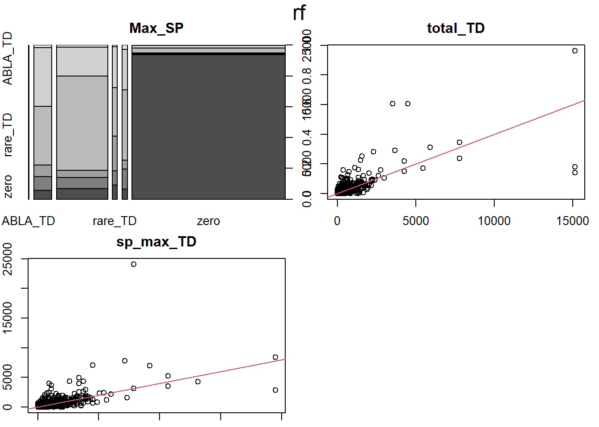
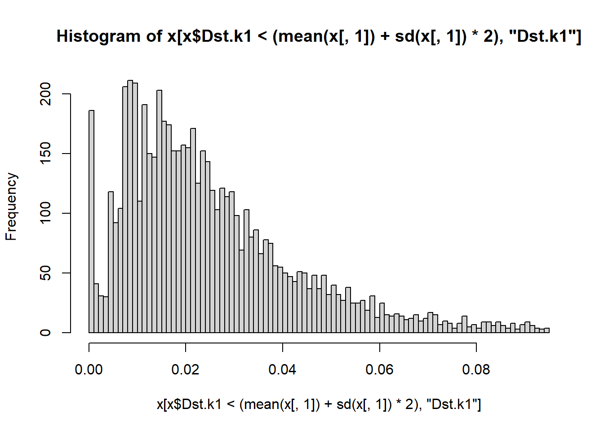

library(tidyverse, quietly = T)
library(esquisse)
library(yaImpute)
library(RSQLite)
library(vegan)
library(randomForest)
library(RSQLite)
options(scipen = 999)Imputation
Summary
- First set
First set is a repeat of the first imputation I did. This one is using the full set of CNs. That is, it contains all the stands that are in ecoregions associated with the study area.
It is comparing the Kralicek three predictors vs the set that contains elevation, aspect, and slope as well. The z variables indicate that the data set only contains plots that have seedlings. There are less zeroes in that set. The full set is about half zeroes.
This set has the msn and mal distance plots, but not RF.
- Set 2
Adding in Random Forests, broadening FPAG to fpa by removing one digit from the Ecoregion code. Organizing the response by species prevalence. Prevalent species are those that have records starting between the 75 percentile and the 90th. It is all zeroes before that. Common species start between the 90th and 97.5. Uncommon species start to have records between 97.5 and 99. Rare after 99.
- The same RF and other distance measures, but on a dataset containing only plots with regeneration.
Results were mixed. It looks like is does a better job of imputing, but the rmsd is higher. It seems like rmsd would be lower in the full set since imputing zero would be right half the time.
Prevalent species are
| SYMBL | Name |
|---|---|
| PSME | Doug-fir |
| ABAM | silver fir |
| ABLA | subalpine fir |
| TSHE | western hemlock |
Common species are:
| SYMBL | Name |
|---|---|
| PIPO | Ponderosa pine |
| TSME | Mountain Hemlock |
| ABGR | Grand Fir |
| THPL | Red Cedar |
| PIEN | Engelmann spruce |
| PICO | Lodgepole pine |
| PIMO3 | W. White Pine |
Uncommon species are:
| SYMBL | Name |
|---|---|
| PIAL | whitebark pine |
| ACGL | Rocky Mountain maple |
| LAOC | western larch |
| TABR2 | Pacific yew |
| CHNO | Alaska yellow-cedar |
| POTR5 | quaking aspen |
Set 1, 3 vs 6, full set vs regen only
This is a repeat of the first comparison I did. I am using the expanded dataset for this run, but for CDS6, it is only about 400 extra plots.
This time around, I saved a dataset where I only kept plots/stands that had regeneration/seedlings. So I changed it a little to compare three and six predictor variable models while also seeing what happens without so many zeroes.
# Pulling from my new interim save point
con <- dbConnect(RSQLite::SQLite(), "./attempt_032524.db")
imp_data <- dbGetQuery(con, "select * from imp_data")
zimp_data <- dbGetQuery(con, "select * from regen_only_imp_data")
plots <- dbGetQuery(con, "select * from fvs_plotinit_plot")
plants_ref <- dbGetQuery(con, "select * from plants_ref")
dbDisconnect(con)
rm(con)
pred_topo <- plots |> select(
STANDPLOT_CN, ELEVFT, SLOPE, ASPECT
)
pred_Kral <- imp_data |> select(
STANDPLOT_CN, CC, BA, SDI, FPAG
)
response <- imp_data |> select(
-c(CC, BA, SDI, FPAG)
)
predictors <- left_join(pred_Kral, pred_topo)|>
relocate(FPAG, .after = STANDPLOT_CN)
# Filtering for only CDS6
cds6 <- predictors |> filter(
FPAG == "CDS6") |>
select(-c(FPAG))
cds_cns <- cds6 |> select(STANDPLOT_CN)
zcds_cns <- zimp_data |> filter(FPAG == "CDS6") |> select(STANDPLOT_CN)
zcds6 <- left_join(zcds_cns, cds6, by ="STANDPLOT_CN")
# Joining the x and y
imp_2 <- left_join(cds_cns, response, by = "STANDPLOT_CN")
# Making CN into rownames
imp_2 <- column_to_rownames(imp_2, "STANDPLOT_CN")
# making sure it's not all zero
imp_2 <- imp_2[, !colSums(imp_2) == 0]
imp_2 <- left_join(cds6, response)
zimp_2 <- left_join(zcds6, response)
# form some test data, y's are defined only for reference observations.
# refs = sample(x = rownames(imp_2), size = (nrow(imp_2)/4)*3)
refs <- rownames(imp_2[1:(round(.75*nrow(imp_2))), ])
# zrefs = sample(x = rownames(zimp_2), size = (nrow(zimp_2)/4)*3)
zrefs <- rownames(zimp_2[1:(round(.75*nrow(zimp_2))), ])
# x is every row and column of predictor variables.
# CC, BA, SDI, ELEVFT, SLOPE, ASPECT
X_predictors1 <- imp_2 |> select(CC, BA, SDI)
X_predictors2 <- imp_2 |> select(CC, BA, SDI, ELEVFT, SLOPE, ASPECT)
zX_predictors1 <- zimp_2 |> select(CC, BA, SDI)
zX_predictors2 <- zimp_2 |> select(CC, BA, SDI, ELEVFT, SLOPE, ASPECT)
# y is all other columns, seedling tree densities.
# row names are row numbers
# y <- imp_df[refs,3:36], this was the example code.
Y_response <- imp_2[refs,] |> select(ends_with("TD"))
Y_response <- Y_response[, order(colSums(-Y_response))]
zY_response <- zimp_2[zrefs,] |> select(ends_with("TD"))
zY_response <- zY_response[, order(colSums(-zY_response))]
# remove zero columns
Y_response <- Y_response[, !colSums(Y_response) == 0]
zY_response <- zY_response[, !colSums(zY_response) == 0]k = 10
# build yai objects using
# most similar neighbor
msn_dist_3 <- yai(x = X_predictors1, y = Y_response, method = "msn", k = k)
# and mahalanobis
mal_dist_3 <- yai(x = X_predictors1, y = Y_response, method = "mahalanobis", k = k)
# For the expanded list of predictors
msn_dist_6 <- yai(x = X_predictors2, y = Y_response, method = "msn", k = k)
# and mahalanobis
mal_dist_6 <- yai(x = X_predictors2, y = Y_response, method = "mahalanobis", k = k)
# Small predictors but standarcized
zmsn_dist_3 <- yai(x = zX_predictors1, y = zY_response, method = "msn", k = k)
# and mahalanobis
zmal_dist_3 <- yai(x = zX_predictors1, y = zY_response, method = "mahalanobis", k = k)
# Standardized expanded
zmsn_dist_6 <- yai(x = zX_predictors2, y = zY_response, method = "msn", k = k)
# and mahalanobis
zmal_dist_6 <- yai(x = zX_predictors2, y = zY_response, method = "mahalanobis", k = k)
imputed_msn_dist_3 <- impute(msn_dist_3)
# imputed_mal_dist_1 <- impute(mal_dist_1)
imputed_msn_dist_6 <- impute(msn_dist_6)
# imputed_mal_dist_2 <- impute(mal_dist_2)
imputed_zmsn_dist_3 <- impute(zmsn_dist_3)
# imputed_zmal_dist_1 <- impute(zmal_dist_1)
imputed_zmsn_dist_6 <- impute(zmsn_dist_6)
# imputed_zmal_dist_2 <- impute(zmal_dist_2)
names <- c('PSME_TD', 'PICO_TD', 'PIPO_TD', 'PRVI_TD', 'ABGR_TD', 'PREM_TD',
'PSME_TD.o', 'PICO_TD.o', 'PIPO_TD.o', 'PRVI_TD.o', 'ABGR_TD.o', 'PREM_TD.o')
imp_msn_dist_3 <- imputed_msn_dist_3[, names(imputed_msn_dist_3) %in% names] |>
filter(PSME_TD < 15000 & PSME_TD.o < 15000)
imp_msn_dist_6 <- imputed_msn_dist_6[, names(imputed_msn_dist_6) %in% names] |>
filter(PSME_TD < 15000 & PSME_TD.o < 15000)
zimp_msn_dist_3 <- imputed_zmsn_dist_3[, names(imputed_zmsn_dist_3) %in% names] |>
filter(PSME_TD < 15000 & PSME_TD.o < 15000)
zimp_msn_dist_6 <- imputed_zmsn_dist_6[, names(imputed_zmsn_dist_6) %in% names] |>
filter(PSME_TD < 15000 & PSME_TD.o < 15000)Plots, 3 vs 6 & Full vs Regen
Here are imputed vs observed when using other the Kralicek 3 variables or adding elev, slope, and aspect for the 6 variable ones.
plot(imp_msn_dist_3)
plot(imp_msn_dist_6)

Here are the three vs six variable plots, but this time, z is for zero. As in there are no zeroes in response variables. z means these are only for plots that have seedlings.
plot(zimp_msn_dist_3)
plot(zimp_msn_dist_6)

Three variables, all plots vs seedling only plots/stands.
These have different labels. Prvi and Abgr are swapped.
plot(imp_msn_dist_3)
plot(zimp_msn_dist_3)

Six variable plots, all stands vs seeldings only.
plot(imp_msn_dist_6)
plot(zimp_msn_dist_6)

FPAG to fpa
I am skipping a set of imputations I did before, in attempt 4 fpag. That one was a failure because FPAG couldn’t be added to the distance matrix. I couldn’t use it with MSN, I don’t think I have tried to use it with RF yet.
This set of code is from CH 14 in the regen book.
rm(list = ls())
k = 10
# Pulling from my new interim save point
con <- dbConnect(RSQLite::SQLite(), "./attempt_032524.db")
imp_data <- dbGetQuery(con, "select * from imp_data")
zimp_data <- dbGetQuery(con, "select * from regen_only_imp_data")
plots <- dbGetQuery(con, "select * from fvs_plotinit_plot")
plants_ref <- dbGetQuery(con, "select * from plants_ref")
dbDisconnect(con)
rm(con)
imp_data_orig <- imp_data
# Grabbing the topography variables
pred_topo <- plots |> select(
STANDPLOT_CN, ELEVFT, SLOPE, ASPECT
)
# Get the Kralicek variables
pred_Kral <- imp_data |> select(
STANDPLOT_CN, CC, BA, SDI, FPAG
)
# remove the predictors from the response.
response <- imp_data |> select(
-c(CC, BA, SDI, FPAG)
)
# join the Kralicek and topo variables.
predictors <- left_join(pred_Kral, pred_topo, join_by(STANDPLOT_CN))|>
relocate(FPAG, .after = STANDPLOT_CN)
unique(imp_data$FPAG) [1] "CWF4" "CDS6" "CDS2" "CAS3" "CDG1" "CMS3" "CWS5" "CHS1" "CES4" "CES2"
[11] "CES1" "CAC1" "CPS2" "CDS7" "CPG1" "CEF2" "CPS5" "CES3" "CDS8" "CD"
[21] "CWG1" "CWS2" "CWF2" "CP" "CF" "CFF2" "CEG3" "CMS2" "CHF2" "CW"
[31] "HC" "CC" "CEF4" "CAG1" "CDG3" "CDS4" "CES" "CFS5" "CEM2" "CHS4"
[41] "CCS2" "CCF2" "CHF3" "CH" "CWS4" "CFS6" "CFS2" "CFS4" "HO" "CE"
[51] "CLS5" "CWS3" "CWS8" "CCS3" "HQS2" "CHS2" "CFS3" "CEF1" "CHF1" "CPG2"
[61] "CMS1" "CFF1" "HOG2" "CWF3" "HOG1" "CMF1" "CMG2" "CEG1" "CDS" "CE41"
[71] "CW61" "CCHS" "CDS1" "CEFH" "CD81" "CEFA" "CW55" "CAG2" "CAS4" "CHF4"
[81] "CDG2" "HQG1" "CHS7" "CAS2" "HQM2" "CDF4" "HX" "CHS6" "CMS5" "CHC2"
[91] "HQ" "HOG3" "CD27" "HOS6" "HOS3" "CWC4" "CPS3" "HAM1" "CEM3" "CA"
[101] "CWGI" "SW72" "CL" "CD63" "CDH4" "CPS0" "CPG0" "CD61" "CWF5" "CEG2"
[111] "CDF0" "CPF0" "CERR" "CWF0" "CEFM" "HOC2" "CHF5" "CACE" "CS" "CM"
[121] "CEN2" "CDGE" "cds7" "HCS3" "HQS0" "HCS1" "CM53" "CDG6" "CS53" "CEM1"
[131] "CE54" "CDS5" "CES5" "HAS3" "CEF3" "CAGO" "CAC5" "SW21" "CAF3" "HOS1"
[141] "HA" "CDS3" "CW33" "CLM4" "CFF4" "CFS1" "CHS5" "HB" "CH21" "CHS3"
[151] "CMS4" "chs5" "CSF1" "CAG3" "CHM1" "CLS3" "HBS1" "CFF3" "CAF2" "CMF2"
[161] "SM20" "CFS" "CHFS" "CH62" "CFM1" "CHMI" "HBM1" "CFRR" "CHD1" "CHS8"
[171] "CHF9" "CHFI" "CHSI" "HAM0" "CLS4" "SM81" "CLS2" "CES6" "CSF2" "CFSC"
[181] "CHF" "CHS9" "CH6-" "CSF3" "HM" "HD" "CFS-" "SM40" "CHF6" "CHS"
[191] "CAS-" "CDRX" "HAS1" "CH12" "CHF0" "HCD1" "CM55" "HAF" imp_data |> group_by(FPAG) |>
summarise(n = n()) |>
arrange(desc(n)) |> head()# A tibble: 6 × 2
FPAG n
<chr> <int>
1 CDS6 2396
2 CFS2 2004
3 CHS1 1524
4 CHF1 1462
5 CDS7 1352
6 CDG1 1090imp_data_FPA <- imp_data |>
mutate(
fpa = str_sub(FPAG, 1, 3)
)
x <- unique(imp_data_FPA$fpa)
x [1] "CWF" "CDS" "CAS" "CDG" "CMS" "CWS" "CHS" "CES" "CAC" "CPS" "CPG" "CEF"
[13] "CD" "CWG" "CP" "CF" "CFF" "CEG" "CHF" "CW" "HC" "CC" "CAG" "CFS"
[25] "CEM" "CCS" "CCF" "CH" "HO" "CE" "CLS" "HQS" "HOG" "CMF" "CMG" "CE4"
[37] "CW6" "CCH" "CD8" "CW5" "HQG" "HQM" "CDF" "HX" "CHC" "HQ" "CD2" "HOS"
[49] "CWC" "HAM" "CA" "SW7" "CL" "CD6" "CDH" "CPF" "CER" "HOC" "CS" "CM"
[61] "CEN" "cds" "HCS" "CM5" "CS5" "CE5" "HAS" "SW2" "CAF" "HA" "CW3" "CLM"
[73] "HB" "CH2" "chs" "CSF" "CHM" "HBS" "SM2" "CH6" "CFM" "HBM" "CFR" "CHD"
[85] "SM8" "HM" "HD" "SM4" "CDR" "CH1" "HCD" "HAF"# There are 17 fpas vs 34 FPAGs
n_distinct(imp_data_FPA$fpa)[1] 92n_distinct(imp_data_FPA$FPAG)[1] 198# n_distinct(imp_data$FPAG)
# There are 4028 vs 2402 in the largest group
imp_data_FPA |> group_by(fpa) |>
summarise(n = n()) |>
arrange(desc(n)) |> head()# A tibble: 6 × 2
fpa n
<chr> <int>
1 CDS 4615
2 CFS 2945
3 CHS 2520
4 CHF 2430
5 CES 2055
6 CMS 1532Before expanding the set, there were 17 fpas and 34 fpags. Now there are 92 fpas and 198 FPAGs
Here is the table before:
| fpa | n |
|---|---|
| CDS | 4028 |
| CES | 2004 |
| CFS | 1840 |
| CDG | 1383 |
| CMS | 1221 |
| CHS | 1220 |
Species prevalence
z <- apply(imp_data, 2, max)
z <- z[6:length(z)]
x <- names(z)
y <- z
names(y) <- NULL
y <- as.numeric(y)
names(y) <- x
# This is a sorted list of the maximum trees per acre per species on one plot
y |> sort(decreasing = T) TSHE_TD PIEN_TD ACGL_TD PICO_TD PSME_TD THPL_TD
47527.98907 24588.61264 24063.85567 18816.28590 15142.98705 14768.16064
ABGR_TD ABAM_TD BEPA_TD LAOC_TD PIPO_TD FRLA_TD
13793.61197 12219.34104 10944.93124 10345.20898 9070.79918 8770.93805
ABLA_TD MAFU_TD TSME_TD PRVI_TD PREM_TD CHNO_TD
7796.38937 7196.66712 4722.81279 4347.98638 3523.36827 3148.54186
POTR5_TD ABPR_TD LALY_TD TABR2_TD ALRU2_TD PRAV_TD
2773.71545 2623.78489 2548.81960 2248.95847 2248.95847 2248.95847
QUGA4_TD PIMO3_TD POBAT_TD ABCO_TD ACMA3_TD PIAL_TD
2099.02791 1874.13206 1274.40980 1274.40980 1049.51395 974.54867
PISI_TD CONU4_TD 2TB_TD ALRH2_TD JUOC_TD CHLA_TD
674.68754 449.79170 449.79170 449.79170 374.82641 374.82640
ARME_TD PRPE2_TD JUNI_TD BEOC2_TD PSMA_TD BEUT_TD
224.89585 224.89585 149.93060 149.93057 74.96528 74.96528
JUHI_TD
74.96528 imp <- imp_data
imp_p <- imp |> select(1:5)
imp_r <- imp |> select(1, 6:ncol(imp))
imp_r <- imp_r |> mutate(
total_TD = rowSums(imp_r[,2:ncol(imp_r)])
)
imp <- left_join(imp_p, imp_r, by = "STANDPLOT_CN")
imp_z <- imp[imp$total_TD > 0,]
# summary(imp_z[,6:ncol(imp_z)])
# apply(imp_z[,6:ncol(imp_z)], 2, quantile, seq(0.72, 0.90, .04))
prevalent_sp <- c('PSME_TD', 'ABAM_TD', 'ABLA_TD', 'TSHE_TD')
keep <- names(imp_z)[!names(imp_z) %in% prevalent_sp]
imp_z2 <- imp_z[,keep]
# apply(imp_z2[,6:ncol(imp_z2)], 2, quantile, seq(0.90, 0.9875, .025))
common_sp <- c('PIPO_TD' , 'TSME_TD', 'ABGR_TD', 'THPL_TD', 'PIEN_TD', 'PICO_TD', 'PIMO3_TD')
keep <- names(imp_z2)[!names(imp_z2) %in% common_sp]
imp_z3 <- imp_z2[,keep]
# apply(imp_z3[,6:ncol(imp_z3)], 2, quantile, seq(0.975, .99, .005))
uncommon_sp <- c('PIAL_TD', 'ACGL_TD', 'LAOC_TD', 'TABR2_TD', 'CHNO_TD',
'POTR5_TD')
keep <- names(imp_z3)[!names(imp_z3) %in% uncommon_sp]
imp_z4 <- imp_z3[,keep]
# apply(imp_z4[,6:ncol(imp_z4)], 2, quantile, seq(0.99, 1, .005))
rare_sp <- names(imp_z4[,6:(ncol(imp_z4)-1)])
sp_prevalence <- list(prevalent = prevalent_sp,
common = common_sp,
uncommon = uncommon_sp,
rare = rare_sp)
# save(sp_prevalence, file = "sp_prevalence.Rdata")
# getwd()
print(sp_prevalence)$prevalent
[1] "PSME_TD" "ABAM_TD" "ABLA_TD" "TSHE_TD"
$common
[1] "PIPO_TD" "TSME_TD" "ABGR_TD" "THPL_TD" "PIEN_TD" "PICO_TD" "PIMO3_TD"
$uncommon
[1] "PIAL_TD" "ACGL_TD" "LAOC_TD" "TABR2_TD" "CHNO_TD" "POTR5_TD"
$rare
[1] "LALY_TD" "BEPA_TD" "PREM_TD" "ABPR_TD" "PRVI_TD" "ALRU2_TD"
[7] "QUGA4_TD" "CONU4_TD" "ACMA3_TD" "JUOC_TD" "FRLA_TD" "2TB_TD"
[13] "POBAT_TD" "MAFU_TD" "ARME_TD" "ABCO_TD" "PISI_TD" "PSMA_TD"
[19] "ALRH2_TD" "JUNI_TD" "BEUT_TD" "BEOC2_TD" "PRPE2_TD" "JUHI_TD"
[25] "CHLA_TD" "PRAV_TD" # Here are the quantiles for most prevelant species with zeroes
# apply(imp_data[,sp_prevalence$prevalent], 2, quantile, seq(0.86, 1, .01))
# Here are the quantiles for common species with zeroes
apply(imp_data[,sp_prevalence$common], 2, quantile, seq(0.95, 1, .01)) PIPO_TD TSME_TD ABGR_TD THPL_TD PIEN_TD PICO_TD
95% 0.00000 0.00000 74.96528 74.96528 0.00000 0.00000
96% 0.00000 0.00000 149.93057 74.96528 0.00000 0.00000
97% 0.00000 74.96528 224.89585 149.93057 0.00000 74.96528
98% 74.96528 74.96528 374.82641 224.89585 74.96528 149.93057
99% 149.93057 224.89585 674.68754 449.79170 149.93057 449.79170
100% 9070.79918 4722.81279 13793.61197 14768.16064 24588.61264 18816.28590
PIMO3_TD
95% 0.00000
96% 0.00000
97% 0.00000
98% 0.00000
99% 74.96528
100% 1874.13206# Here are the quantiles for uncommon species with zeroes
apply(imp_data[,sp_prevalence$uncommon], 2, quantile, seq(0.9875, 1, .0025)) PIAL_TD ACGL_TD LAOC_TD TABR2_TD CHNO_TD POTR5_TD
98.75% 0.00000 0.00000 74.96528 0.00000 74.96528 0.00000
99% 0.00000 74.96528 74.96528 0.00000 74.96528 0.00000
99.25% 74.96528 74.96528 74.96528 74.96528 149.93057 74.96528
99.5% 74.96528 149.93057 149.93057 74.96528 292.36460 149.93057
99.75% 149.93057 449.79170 449.79170 224.89585 449.79170 299.86113
100% 974.54867 24063.85567 10345.20898 2248.95847 3148.54186 2773.71545# Here are the quantiles for rare species with zeroes
apply(imp_data[,sp_prevalence$rare], 2, quantile, seq(0.9925, 1, .0025)) LALY_TD BEPA_TD PREM_TD ABPR_TD PRVI_TD ALRU2_TD
99.25% 0.00000 0.00 0.00000 0.00000 0.0000 0.00000
99.5% 0.00000 0.00 74.96528 74.96528 0.0000 0.00000
99.75% 74.96528 0.00 224.89585 149.93057 149.9306 74.96528
100% 2548.81960 10944.93 3523.36827 2623.78489 4347.9864 2248.95847
QUGA4_TD CONU4_TD ACMA3_TD JUOC_TD FRLA_TD 2TB_TD POBAT_TD
99.25% 0.00000 0.0000 0.00000 0.0000 0.000 0.0000 0.00
99.5% 67.46875 0.0000 0.00000 0.0000 0.000 0.0000 0.00
99.75% 149.93057 0.0000 74.96528 0.0000 0.000 0.0000 0.00
100% 2099.02791 449.7917 1049.51395 374.8264 8770.938 449.7917 1274.41
MAFU_TD ARME_TD ABCO_TD PISI_TD PSMA_TD ALRH2_TD JUNI_TD BEUT_TD
99.25% 0.000 0.0000 0.00 0.0000 0.00000 0.0000 0.0000 0.00000
99.5% 0.000 0.0000 0.00 0.0000 0.00000 0.0000 0.0000 0.00000
99.75% 0.000 0.0000 0.00 0.0000 0.00000 0.0000 0.0000 0.00000
100% 7196.667 224.8958 1274.41 674.6875 74.96528 449.7917 149.9306 74.96528
BEOC2_TD PRPE2_TD JUHI_TD CHLA_TD PRAV_TD
99.25% 0.0000 0.0000 0.00000 0.0000 0.000
99.5% 0.0000 0.0000 0.00000 0.0000 0.000
99.75% 0.0000 0.0000 0.00000 0.0000 0.000
100% 149.9306 224.8958 74.96528 374.8264 2248.9582, RF on CDS
imp_data_FPA <- imp_data |>
mutate(
fpa = str_sub(FPAG, 1, 3)
)
CDS <- imp_data_FPA[imp_data_FPA$fpa == "CDS", ]
CDS <- CDS |> mutate(
common = rowSums(CDS[,sp_prevalence$common]),
uncommon = rowSums(CDS[,sp_prevalence$uncommon]),
rare_TD = rowSums(CDS[,sp_prevalence$rare]),
total_TD = rowSums((CDS[, 6:39]))
) |>
select(-sp_prevalence$rare, -sp_prevalence$uncommon, -sp_prevalence$common)
CDS <- CDS |>
relocate(fpa, .after = FPAG)
# Here are the quantiles for most prevalent species with zeroes
apply(CDS[,sp_prevalence$prevalent], 2, quantile, seq(0.99, 1, .001)) PSME_TD ABAM_TD ABLA_TD TSHE_TD
99% 974.5487 0 0.00000 0.00000
99.1% 1085.0475 0 74.96528 0.00000
99.2% 1199.4445 0 74.96528 0.00000
99.3% 1274.4098 0 74.96528 0.00000
99.4% 1349.3751 0 74.96528 0.00000
99.5% 1494.0581 0 74.96528 0.00000
99.6% 1574.2709 0 149.93057 0.00000
99.7% 1672.9252 0 149.93057 0.00000
99.8% 2024.0626 0 224.89585 0.00000
99.9% 2681.6581 0 357.73433 74.96528
100% 15142.9871 0 674.68754 299.86113I viewed the table and picked values based on the next highest after the max. I suppose I could also trim the highest values.
# I am replacing the highest value with the next highest value
CDS$PSME_TD[CDS$PSME_TD > 3148.5] <- 3148.5
# Removing an All zero column and a nearly empty one.
CDS <- CDS |> select(-c(ABAM_TD, TSHE_TD))
cds <- CDS
refs <- cds[1:(3*nrow(cds)/4),]
# CDS
# cds
# data("MoscowMtStJoe")
x <- cds |> select(1:4)
x <- remove_rownames(x)
x <- column_to_rownames(x, "STANDPLOT_CN")
y <- cds |> select(1, 7:ncol(cds))
# y <- y[refs]
y <- remove_rownames(y)
y <- column_to_rownames(y, "STANDPLOT_CN")
mal <- yai(x = x, y = y, method = "mahalanobis", k = k)
msn <- yai(x = x, y = y, method = "msn", k = k)
gnn <- yai(x = x, y = y, method = "gnn", k = k)Warning in yai(x = x, y = y, method = "gnn", k = k): 2944 rows have y-variable
row sums <= 0 were converted to target observations for method gnnica <- yai(x = x, y = y, method = "ica", k = k)Loading required namespace: fastICAerror_full <- errorStats(mal, msn, gnn, ica)Warning in notablyDistant(x, p = 1 - pzero): when computing threshold, 441 zero
distances of 4615 references were set to 0.0000000002325966Warning in notablyDistant(x, p = plg): when computing threshold, 441 zero
distances of 4615 references were set to 0.0000000002325966Warning in notablyDistant(x, p = plg): when computing threshold, 441 zero
distances of 4615 references were set to 0.000000000130061Warning in notablyDistant(x, p = plg): when computing threshold, 136 zero
distances of 1671 references were set to 0.00000000000000001387779Warning in notablyDistant(x, p = plg): when computing threshold, 441 zero
distances of 4615 references were set to 0.0000000002326219yrf <- cbind(whatsMax(y[ ,1:(ncol(y)-1)]), y[, ncol(y)])
names(yrf) <- c('Max_SP', 'sp_max_TD', 'total_TD')
# rf <- yai(x = x, y = yrf, method = "randomForest", k = k)
# save(rf, file = "rf.Rdata")
load("rf.Rdata")
# This won't run with rf in it?
# error_full <- errorStats(mal, msn, gnn, rf)
Full_set <- impute(rf, ancillaryData = y)
rmsd <- compare.yai(mal, msn, gnn, Full_set, ica)Warning in compare.yai(mal, msn, gnn, Full_set, ica): not all scale factors are
the same.rmsd.yai(Full_set) rmsd
PSME_TD 188.40859
ABLA_TD 26.69023
common 252.39648
uncommon 376.31626
rare_TD 111.67231
total_TD 428.91156Plots, RF, Full set
Dots below the one to one line indicate lower rmsd for the named imputation on the horizontal. RF does the best.
plot(rmsd, main = "Full Set")par(mar = c(1,2,3.2,1))
plot(rf, vars = yvars(rf))
par(mar = c(1,2,3.2,1))
plot(msn)rmsd mal.rmsdS msn.rmsdS gnn.rmsdS Full_set.rmsdS ica.rmsdS
PSME_TD 0.9742293 1.0028254 1.0430676 0.8780024 0.9760192
ABLA_TD 1.2163312 1.3051459 1.4111898 1.1805489 1.2163312
common 0.9446253 1.0126262 0.8401424 0.7498232 0.9460919
uncommon 1.4020282 1.3936819 1.4072269 1.0124991 1.4019150
rare_TD 1.3471906 1.2835394 1.3637743 1.2004361 1.3613216
total_TD 0.5857362 0.8211703 0.4994699 0.6581468 0.5857362find_best <- function(df) {
data.frame(name = names(df)[apply(df, 1, which.min)],
value = apply(df, 1, min))
}
find_best(rmsd) name value
PSME_TD Full_set.rmsdS 0.8780024
ABLA_TD Full_set.rmsdS 1.1805489
common Full_set.rmsdS 0.7498232
uncommon Full_set.rmsdS 1.0124991
rare_TD Full_set.rmsdS 1.2004361
total_TD gnn.rmsdS 0.49946993. RF on seedling plots
k = 10
# Pulling from my new interim save point
con <- dbConnect(RSQLite::SQLite(), "./attempt_032524.db")
# imp_data <- dbGetQuery(con, "select * from imp_data")
zimp_data <- dbGetQuery(con, "select * from regen_only_imp_data")
plots <- dbGetQuery(con, "select * from fvs_plotinit_plot")
plants_ref <- dbGetQuery(con, "select * from plants_ref")
dbDisconnect(con)
rm(con)
# Grabbing the topography variables
pred_topo <- plots |> select(
STANDPLOT_CN, ELEVFT, SLOPE, ASPECT
)
# Get the Kralicek variables
pred_Kral <- zimp_data |> select(
STANDPLOT_CN, CC, BA, SDI, FPAG
)
# remove the predictors from the response.
response <- zimp_data |> select(
-c(CC, BA, SDI, FPAG)
)
# join the Kralicek and topo variables.
predictors <- left_join(pred_Kral, pred_topo, join_by(STANDPLOT_CN))|>
relocate(FPAG, .after = STANDPLOT_CN)CDS
imp_data_FPA <- zimp_data |>
mutate(
fpa = str_sub(FPAG, 1, 3)
)
x <- unique(imp_data_FPA$fpa)
CDS <- imp_data_FPA[imp_data_FPA$fpa == "CDS", ]
CDS <- CDS |> mutate(
common = rowSums(CDS[,sp_prevalence$common]),
uncommon = rowSums(CDS[,sp_prevalence$uncommon]),
rare_TD = rowSums(CDS[,sp_prevalence$rare]),
total_TD = rowSums((CDS[, 6:39]))
) |>
select(-sp_prevalence$rare, -sp_prevalence$uncommon, -sp_prevalence$common)
CDS <- CDS |>
relocate(fpa, .after = FPAG)
# I am replacing the highest value with the next highest value
CDS$PSME_TD[CDS$PSME_TD > 3148.5] <- 3148.5
# Removing an All zero column and a nearly empty one.
CDS <- CDS |> select(-c(ABAM_TD, TSHE_TD))
cds <- CDS
refs <- cds[1:(3*nrow(cds)/4),]
# CDS
# cds
# data("MoscowMtStJoe")
x <- cds |> select(1:4)
x <- remove_rownames(x)
x <- column_to_rownames(x, "STANDPLOT_CN")
y <- cds |> select(1, 7:ncol(cds))
# y <- y[refs]
y <- remove_rownames(y)
y <- column_to_rownames(y, "STANDPLOT_CN")
zmal <- yai(x = x, y = y, method = "mahalanobis", k = k)
zmsn <- yai(x = x, y = y, method = "msn", k = k)
zgnn <- yai(x = x, y = y, method = "gnn", k = k)
zica <- yai(x = x, y = y, method = "ica", k = k)
zerror_full <- errorStats(zmal, zmsn, zgnn, zica)Warning in notablyDistant(x, p = 1 - pzero): when computing threshold, 144 zero
distances of 1671 references were set to 0.0000000003454502Warning in notablyDistant(x, p = plg): when computing threshold, 144 zero
distances of 1671 references were set to 0.0000000003454502Warning in notablyDistant(x, p = plg): when computing threshold, 144 zero
distances of 1671 references were set to 0.0000000002290794Warning in notablyDistant(x, p = plg): when computing threshold, 136 zero
distances of 1671 references were set to 0.00000000000000005551115Warning in notablyDistant(x, p = plg): when computing threshold, 144 zero
distances of 1671 references were set to 0.0000000003455536zyrf <- cbind(whatsMax(y[ ,1:(ncol(y)-1)]), y[, ncol(y)])
names(zyrf) <- c('Max_SP', 'sp_max_TD', 'total_TD')
# zrf <- yai(x = x, y = zyrf, method = "randomForest", k = k)
# save(zrf, file = "zrf.Rdata")
load("zrf.Rdata")
# This won't run with rf in it?
# error_full <- errorStats(mal, msn, gnn, rf)
zFull_set <- impute(zrf, ancillaryData = y)
zrmsd <- compare.yai(zmal, zmsn, zgnn, zFull_set, zica)
rmsd.yai(zFull_set) rmsd
PSME_TD 312.83162
ABLA_TD 44.27986
common 405.36313
uncommon 625.12598
rare_TD 183.63585
total_TD 709.81751For each species set, which imputation had the lowest rmsd?
find_best <- function(df) {
data.frame(name = names(df)[apply(df, 1, which.min)],
value = apply(df, 1, min))
}
find_best(zrmsd) name value
PSME_TD zFull_set.rmsdS 0.9559565
ABLA_TD zFull_set.rmsdS 1.1841441
common zFull_set.rmsdS 0.7420633
uncommon zFull_set.rmsdS 1.0143569
rare_TD zFull_set.rmsdS 1.2025893
total_TD zgnn.rmsdS 0.4994699find_best(rmsd) name value
PSME_TD Full_set.rmsdS 0.8780024
ABLA_TD Full_set.rmsdS 1.1805489
common Full_set.rmsdS 0.7498232
uncommon Full_set.rmsdS 1.0124991
rare_TD Full_set.rmsdS 1.2004361
total_TD gnn.rmsdS 0.4994699RF does best for all but total tree density. The set with all the zeroes has lower rmsd. I find that odd.
It would be likely that imputing zero for zero would reduce rmsd. Even by chance, if half the data is zero, it would be likely to imput the observed.
Plots vs Plots
These tell the same story, RF does better.
plot(zrmsd, main = "zFull Set")
plot(rmsd, main = "Full Set")
The zSeedling data shows the distribution of species better. It’s not half zeros. The imputed values look identical.
plot(zrf, vars = yvars(zrf))
plot(rf, vars = yvars(rf))
zSeedling’s imputed vs observed are closer to the 1:1 line. The large values in total and uncommon make it less clear.
par(mar = c(2,2,3.2,1))
plot(zmsn)
plot(msn)For the RF imputation, the Seedlings only data was marginally more distant.
zrmsd zmal.rmsdS zmsn.rmsdS zgnn.rmsdS zFull_set.rmsdS zica.rmsdS
PSME_TD 1.0307255 0.9949283 1.0455937 0.9559565 1.0339957
ABLA_TD 1.4671745 1.2608720 1.4111898 1.1841441 1.4671745
common 0.9436294 0.8770926 0.8384303 0.7420633 0.9393318
uncommon 1.4064999 1.4029035 1.4069185 1.0143569 1.4064118
rare_TD 1.4510371 1.2894068 1.3407893 1.2025893 1.3884054
total_TD 0.5530212 0.6578850 0.4994699 0.6914508 0.5530212rmsd mal.rmsdS msn.rmsdS gnn.rmsdS Full_set.rmsdS ica.rmsdS
PSME_TD 0.9742293 1.0028254 1.0430676 0.8780024 0.9760192
ABLA_TD 1.2163312 1.3051459 1.4111898 1.1805489 1.2163312
common 0.9446253 1.0126262 0.8401424 0.7498232 0.9460919
uncommon 1.4020282 1.3936819 1.4072269 1.0124991 1.4019150
rare_TD 1.3471906 1.2835394 1.3637743 1.2004361 1.3613216
total_TD 0.5857362 0.8211703 0.4994699 0.6581468 0.5857362zrmsd$zFull_set.rmsdS - rmsd$Full_set.rmsdS[1] 0.077954107 0.003595165 -0.007759937 0.001857819 0.002153193
[6] 0.033303953Checking on yaImpute functions.
I think the yai objects have the data for nearest neighbors.
rm(list = ls())
# Pulling from my new interim save point
con <- dbConnect(RSQLite::SQLite(), "./attempt_032524.db")
imp_data <- dbGetQuery(con, "select * from imp_data")
zimp_data <- dbGetQuery(con, "select * from regen_only_imp_data")
plots <- dbGetQuery(con, "select * from fvs_plotinit_plot")
plants_ref <- dbGetQuery(con, "select * from plants_ref")
dbDisconnect(con)
rm(con)
load("sp_prevalence.Rdata")Test imp, full set.
imp_data_FPA <- imp_data |>
mutate(
fpa = str_sub(FPAG, 1, 3)
)
# CDS <- imp_data_FPA[imp_data_FPA$fpa == "CDS", ]
imp_data_FPA <- imp_data_FPA |> mutate(
common = rowSums(imp_data_FPA[,sp_prevalence$common]),
uncommon = rowSums(imp_data_FPA[,sp_prevalence$uncommon]),
rare_TD = rowSums(imp_data_FPA[,sp_prevalence$rare]),
total_TD = rowSums((imp_data_FPA[, 6:39]))
) |>
select(-sp_prevalence$rare, -sp_prevalence$uncommon, -sp_prevalence$common)
# imp_data_FPA <- imp_data_FPA |> mutate(
# total_TD = rowSums((imp_data_FPA[, 6:(ncol(imp_data_FPA)-1)]))
# )
imp_data_FPA <- imp_data_FPA |>
relocate(fpa, .after = FPAG)
# Here are the quantiles for most prevalent species with zeroes
# apply(imp_data_FPA[,sp_prevalence$prevalent], 2, quantile, seq(0.99, 1, .001))
# I am replacing the highest value with the next highest value
# imp_data_FPA$PSME_TD[imp_data_FPA$PSME_TD > 3148.5] <- 3148.5
# Removing an All zero column and a nearly empty one.
# imp_data_FPA <- imp_data_FPA |> select(-c(ABAM_TD, TSHE_TD))
cds <- imp_data_FPA
refs <- rownames(cds[1:(3*nrow(cds)/4),])
x <- cds |> select(1:4)
x <- remove_rownames(x)
x <- column_to_rownames(x, "STANDPLOT_CN")
yfull <- cds |> select(1, 7:ncol(cds))
y <- yfull[refs,]
y <- remove_rownames(y)
y <- column_to_rownames(y, "STANDPLOT_CN")
yfull <- remove_rownames(yfull)
yfull <- column_to_rownames(yfull, "STANDPLOT_CN")
k = 10
mal <- yai(x = x, y = y, method = "mahalanobis", k = k)
msn <- yai(x = x, y = y, method = "msn", k = k)
gnn <- yai(x = x, y = y, method = "gnn", k = k)Warning in yai(x = x, y = y, method = "gnn", k = k): 8889 rows have y-variable
row sums <= 0 were converted to target observations for method gnnica <- yai(x = x, y = y, method = "ica", k = k)
msn_boot <- yai(x = x, y = yfull, method = "msn", k = k, bootstrap = T)
# error_full <- errorStats(mal, msn, gnn, ica)
#
yrf <- cbind(whatsMax(y[ ,1:(ncol(y)-1)]), y[, ncol(y)])
#
names(yrf) <- c('Max_SP', 'sp_max_TD', 'total_TD')
#
# frf2 <- yai(x = x, y = yrf, method = "randomForest", k = k)
# save(frf, file = "frf.Rdata")
# save(frf2, file = "frf2.Rdata")
load("frf.Rdata")
load("frf2.Rdata")
# This won't run with rf in it?
# error_full <- errorStats(mal, msn, gnn, rf)
Full_set <- impute(frf, ancillaryData = y)
frf2_set <- impute(frf2, ancillaryData = y)
rmsd <- compare.yai(mal, msn, gnn, Full_set, ica, msn_boot)Warning in compare.yai(mal, msn, gnn, Full_set, ica, msn_boot): not all scale
factors are the same.rmsd.yai(Full_set) |> arrange(desc(rmsd)) |> summary() rmsd
Min. :184.6
1st Qu.:302.4
Median :321.5
Mean :338.3
3rd Qu.:359.6
Max. :519.1 These got messed up when I went back and tried to save a plot to compare the fpag as factor plot. The second one was originally for all species individually. It wasn’t anything special. Same as others, messy.
par(mar = c(1,1,3.2,1))
# jpeg("p_full_set.jpg")
plot(frf2_set)par(mar = c(1,1,3.2,1))
plot(Full_set)plot(rmsd)Stochastic Distribution
Notably dist example
# data(iris)
#
#
# # form some test data
# refs=sample(rownames(iris),50)
# x <- iris[,1:3] # Sepal.Length Sepal.Width Petal.Length
# y <- iris[refs,4:5] # Petal.Width Species
#
# # build an msn run, first build dummy variables for species.
#
# sp1 <- as.integer(iris$Species=="setosa")
# sp2 <- as.integer(iris$Species=="versicolor")
# y2 <- data.frame(cbind(iris[,4],sp1,sp2),row.names=rownames(iris))
# y2 <- y2[refs,]
#
# names(y2) <- c("Petal.Width","Sp1","Sp2")
#
# xmsn <- yai(x=x,y=y2,method="msn")
#
# notablyDistant(xmsn)# empty
x <- msn$neiDstTrgs
x <- as.data.frame(x)
max(x[,1])[1] 0.8838358hist(x[,1], breaks = 100)mean(x[,1]) + sd(x[,1])*2[1] 0.09517604hist(x[x$Dst.k1 < (mean(x[,1]) + sd(x[,1])*2), "Dst.k1"], breaks = 100)
hist(log(x[,1]), breaks = 100)hist(log(x[x$Dst.k1 < (mean(x[,1]) + sd(x[,1])*2), "Dst.k1"]), breaks = 100)log(0.04307483)[1] -3.144816notablyDistant(msn, threshold = .134)$notablyDistantRefs
use dist
22399018010497_3 22398703010497_3 1.6368786
13009978010497_4 22399290010497_1 1.0888892
216960325020004_4 22398703010497_3 0.5524446
40220286010497_3 216961121020004_1 0.4377439
13009978010497_2 22931069010497_3 0.3776544
22398786010497_2 22954397010497_3 0.3629839
22954397010497_3 22954586010497_1 0.3486320
8605918010901_2 558630833126144_1 0.3471019
22954397010497_4 22398585010497_3 0.3280782
216961121020004_1 558629497126144_3 0.2915627
22399290010497_1 29395670010497_3 0.2781671
558629497126144_3 290008707489998_3 0.2550805
22398779010497_4 13037626010497_1 0.2521472
238861338489998_3 22954586010497_1 0.2470366
13049707010497_3 22398621010497_4 0.2460680
24853515010900_2 558630867126144_3 0.2393577
558630867126144_3 24853515010900_2 0.2393577
13037626010497_1 22398703010497_3 0.2357689
22398703010497_3 13037626010497_1 0.2357689
22399054010497_4 22398369010497_4 0.2353384
22954484010497_4 22954384010497_4 0.2314548
22398578010497_3 13050884010497_4 0.2307665
174763283020004_3 22398573010497_3 0.2305093
22398573010497_3 174763283020004_3 0.2305093
238861440489998_2 22399037010497_1 0.2265928
22398702010497_3 22954586010497_1 0.2199238
22954586010497_1 22398702010497_3 0.2199238
22954384010497_4 13037626010497_3 0.2153577
238861440489998_1 22398784010497_3 0.2049274
22399288010497_1 22399284010497_4 0.1986057
22954777010497_4 13060802010497_3 0.1762695
216960205020004_1 13004916010497_1 0.1761057
22399284010497_3 290008704489998_3 0.1706586
22933115010497_1 22954341010497_3 0.1693149
13037626010497_3 22954372010497_2 0.1684734
216959926020004_1 22827645010497_2 0.1668744
13050884010497_2 238861251489998_2 0.1642187
22827635010497_3 558630690126144_3 0.1641223
558629658126144_1 40220467010497_3 0.1640346
22954372010497_2 22827491010497_4 0.1622180
238861047489998_4 238861293489998_4 0.1559969
238861293489998_4 238861047489998_4 0.1559969
174763488020004_1 22954429010497_1 0.1552325
13204702010497_2 22398806010497_4 0.1528064
22398786010497_1 216959763020004_1 0.1508395
22399011010497_2 13036367010497_4 0.1490321
22954688010497_3 22931146010497_2 0.1489400
22931145010497_4 345936539489998_3 0.1420914
13204702010497_4 22398784010497_4 0.1415597
22398784010497_4 13204702010497_4 0.1415597
13230130010497_3 22931069010497_3 0.1414399
22931069010497_3 13230130010497_3 0.1414399
22399282010497_4 412219998489998_1 0.1369255
22827491010497_4 216960487020004_3 0.1366811
22398784010497_1 558630833126144_1 0.1343229
22398806010497_4 22399028010497_4 0.1341743
490388032126144_2 22954341010497_3 0.1340595
$notablyDistantTrgs
use dist
444202329489998_2 22399018010497_3 0.8838358
29881887010497_3 22399018010497_3 0.8735740
558630963126144_3 22399290010497_1 0.4988810
8642760010901_4 22398702010497_3 0.3745856
40220846010497_2 22398702010497_3 0.3578139
412223212489998_1 22399058010497_2 0.3287638
558630922126144_2 412223101489998_4 0.3257559
29394875010497_3 13230130010497_3 0.3097321
558630922126144_1 412223101489998_4 0.3086052
48206170010497_3 22399290010497_1 0.3054331
29883273010497_3 22399290010497_1 0.2993880
490388177126144_1 22954397010497_4 0.2982816
30763967020004_1 29395670010497_3 0.2862008
44541363020004_2 345933621489998_1 0.2804372
412220475489998_4 22954777010497_4 0.2690961
273641056489998_2 22399288010497_1 0.2689661
558630977126144_4 22954760010497_3 0.2550543
44541638020004_4 22398703010497_3 0.2549495
44541638020004_2 238861158489998_3 0.2503243
24499760010900_3 22399284010497_3 0.2494237
273641056489998_4 13009978010497_4 0.2483758
24543603010900_3 238861784489998_1 0.2416192
40220150010497_3 22932909010497_1 0.2332969
558630981126144_3 22954484010497_4 0.2311133
30764876020004_3 22398786010497_2 0.2178295
40220128010497_3 22954397010497_4 0.2116447
48206606010497_2 238861585489998_1 0.1987157
412223110489998_3 22954397010497_3 0.1986595
30764893020004_1 412223101489998_4 0.1956262
484819133489998_3 22398786010497_2 0.1925549
24490736010900_1 216960205020004_1 0.1918436
44541063020004_2 48206605010497_2 0.1913806
484818953489998_3 216960205020004_1 0.1910648
290008836489998_3 22932909010497_3 0.1879296
24151714010900_1 44543461020004_3 0.1872123
40220653010497_4 238861158489998_3 0.1864092
273643053489998_3 22932909010497_1 0.1855042
30763621020004_2 238861784489998_1 0.1847611
412223111489998_3 22398784010497_3 0.1813624
345934914489998_4 216961407020004_3 0.1781251
48205092010497_2 13060802010497_3 0.1750833
290008677489998_2 13230130010497_3 0.1738890
558629234126144_2 238861293489998_4 0.1730680
29395534010497_1 22954484010497_3 0.1721210
24499760010900_1 44543461020004_3 0.1699613
29881462010497_4 22954484010497_4 0.1644007
412222533489998_3 22954760010497_3 0.1604215
558629443126144_3 13230130010497_3 0.1596494
29883336010497_4 22954760010497_3 0.1590602
412221538489998_1 216958778020004_1 0.1588589
484818886489998_1 22398823010497_4 0.1587919
24494145010900_1 345933621489998_1 0.1576797
40220860010497_2 238861440489998_1 0.1576258
44541011020004_3 22954708010497_1 0.1575943
29394734010497_3 174763543020004_1 0.1568008
48202708010497_2 22933115010497_1 0.1564757
273641739489998_4 216960176020004_1 0.1543169
412220777489998_4 22399018010497_3 0.1498604
290008677489998_1 558629497126144_3 0.1471938
29395710010497_1 13050884010497_2 0.1451918
558630949126144_3 22827572010497_3 0.1451220
273639950489998_1 238861585489998_1 0.1450536
412221076489998_2 22954372010497_2 0.1447240
24163060010900_4 22954342010497_2 0.1436677
558630931126144_1 22399054010497_3 0.1430704
444202090489998_4 444202456489998_4 0.1417478
24530286010900_2 216958778020004_1 0.1406567
29883201010497_3 22954654010497_2 0.1404798
412223212489998_3 238861188489998_1 0.1403676
24846081010900_4 238861440489998_3 0.1391415
273642539489998_1 22933115010497_1 0.1387503
48204252010497_3 174763543020004_1 0.1387342
48206050010497_1 558629497126144_3 0.1383256
44541224020004_1 22954341010497_3 0.1379265
30765041020004_2 13016117010497_3 0.1375495
29881630010497_4 22827635010497_3 0.1372777
8619726010901_2 174763686020004_4 0.1372125
273641594489998_1 22954614010497_2 0.1369819
48205582010497_2 22954373010497_3 0.1353704
$threshold
[1] 0.134
$method
[1] "distribution"summary(x) Dst.k1 Dst.k2 Dst.k3 Dst.k4
Min. :0.00000 Min. :0.00000 Min. :0.00000 Min. :0.00000
1st Qu.:0.01204 1st Qu.:0.01768 1st Qu.:0.02129 1st Qu.:0.02408
Median :0.02153 Median :0.02927 Median :0.03454 Median :0.03869
Mean :0.02888 Mean :0.03894 Mean :0.04573 Mean :0.05115
3rd Qu.:0.03523 3rd Qu.:0.04694 3rd Qu.:0.05415 3rd Qu.:0.06018
Max. :0.88384 Max. :1.69366 Max. :1.78612 Max. :1.92789
Dst.k5 Dst.k6 Dst.k7 Dst.k8
Min. :0.00000 Min. :0.00000 Min. :0.00000 Min. :0.00000
1st Qu.:0.02627 1st Qu.:0.02817 1st Qu.:0.02972 1st Qu.:0.03138
Median :0.04219 Median :0.04527 Median :0.04813 Median :0.05042
Mean :0.05557 Mean :0.05956 Mean :0.06305 Mean :0.06621
3rd Qu.:0.06502 3rd Qu.:0.06961 3rd Qu.:0.07386 3rd Qu.:0.07754
Max. :2.11432 Max. :2.40130 Max. :2.46419 Max. :2.48889
Dst.k9 Dst.k10
Min. :0.00000 Min. :0.00000
1st Qu.:0.03261 1st Qu.:0.03405
Median :0.05286 Median :0.05498
Mean :0.06923 Mean :0.07220
3rd Qu.:0.08109 3rd Qu.:0.08490
Max. :2.63022 Max. :2.66556 test <- imp_data_FPA |> filter(fpa == "CWF")
test <- test[,2:4]
test2 <- newtargets(msn, newdata = test)
test2
Call:
newtargets(object = msn, newdata = test)
0 observations dropped
method used: msn
Cancor report:
cor F
1 0.62757 464.71
2 0.20890 64.51
3 0.06102 11.49
Pr.F
1 0.0000000000000000000000000000000000000000000000000000000000000000000000000000000000000000000000000000000000000000000000000000000000000000000000000000000000000000000000000000000000000000
2 0.0000000000000000000000000000000000000000000000000000000000000000000000000000000000000000000000000000000000000000000000000000000000000000000000000000000000000000000000000000000000001775
3 0.0000000000007045589223564445240446940665890451782615855336189270019531250000000000000000000000000000000000000000000000000000000000000000000000000000000000000000000000000000000000000000
Sig
1
2
3
3 vectors used, pVal= 0.05
cancor$xcoef:
[,1] [,2] [,3]
CC -0.5930479 -0.8225699 1.2486928
BA -1.7605768 1.6025717 -0.1081934
SDI 2.5606038 -0.2173132 -0.2471598
Projector:
[,1] [,2] [,3]
CC -0.3721794 -0.17183725 0.076190649
BA -1.1048860 0.33478188 -0.006601565
SDI 1.6069593 -0.04539735 -0.015080784
CCA not run
randomForest not run
0 y variables dropped
0 x variables dropped
Note: ann used
First 10 targets:
Dst.k1 Dst.k2 Dst.k3 Dst.k4 Dst.k5 Dst.k6 Dst.k7
1 0 0.022839131 0.024065301 0.02503445 0.027518941 0.02881239 0.02893608
2 0 0.006833636 0.012532360 0.01348305 0.014832297 0.01727352 0.01826303
3 0 0.011627065 0.013215233 0.01490622 0.015215686 0.02106584 0.02325435
4 0 0.086915652 0.116651910 0.12766527 0.131262588 0.13309124 0.13377220
5 0 0.005280908 0.009704220 0.01256398 0.012704678 0.01377202 0.01522488
6 0 0.007397829 0.008049363 0.00863464 0.008844124 0.01264707 0.01301245
7 0 0.007806150 0.012867828 0.02558227 0.026881552 0.02739568 0.02915953
8 0 0.009487715 0.010230969 0.01516286 0.024068629 0.02695494 0.02706587
9 0 0.008123271 0.033357538 0.03494585 0.043941166 0.04805847 0.05177362
10 0 0.033440381 0.064661111 0.06648757 0.067584395 0.07127761 0.08327198
Dst.k8 Dst.k9 Dst.k10 Id.k1 Id.k2
1 0.02899794 0.03009278 0.03176503 12964130010497_1 174763519020004_4
2 0.02020276 0.02097464 0.02163351 12964130010497_2 48204206010497_2
3 0.02391233 0.02428216 0.02613611 12964130010497_3 40220330010497_2
4 0.13488224 0.13574756 0.14235163 12964130010497_4 24539823010900_3
5 0.01568192 0.01861327 0.01911111 12966246010497_1 558630806126144_2
6 0.01424728 0.01439073 0.01615086 12966246010497_2 22933087010497_3
7 0.02985969 0.03253432 0.03301640 12966246010497_3 29881627010497_1
8 0.02818138 0.02826890 0.03202578 12966246010497_4 22398485010497_4
9 0.05481330 0.05506222 0.05621303 12992742010497_1 22827555010497_3
10 0.08916667 0.10236031 0.10837711 12992742010497_2 29395694010497_3
Id.k3 Id.k4 Id.k5 Id.k6
1 22399225010497_4 558629785126144_3 238861587489998_2 22827610010497_4
2 24838588010900_4 22399221010497_3 29883411010497_1 444202393489998_4
3 22398350010497_3 22398186010497_1 24199550010900_4 40220720010497_1
4 345936102489998_2 8648137010901_4 29882757010497_2 29882045010497_3
5 22398222010497_4 8603202010901_2 558630866126144_4 30763912020004_3
6 273640495489998_1 22399225010497_3 24134547010900_2 193209107020004_3
7 444202158489998_3 24195448010900_2 48202964010497_2 558629551126144_4
8 29883214010497_2 22398995010497_2 22398261010497_1 22932917010497_1
9 22399025010497_4 29883185010497_2 30764203020004_4 22398412010497_1
10 490388204126144_3 22398585010497_2 174763488020004_2 22931272010497_4
Id.k7 Id.k8 Id.k9 Id.k10
1 345934904489998_2 48206545010497_1 216959705020004_3 216958568020004_4
2 40403568010497_1 412223102489998_3 44541780020004_4 29395607010497_3
3 444202209489998_2 22398239010497_4 48206217010497_4 24833864010900_4
4 22398806010497_3 48202991010497_4 273641507489998_3 22399205010497_3
5 29883052010497_4 29395653010497_2 22931274010497_2 48203128010497_2
6 40403580010497_3 40220779010497_1 22933263010497_2 273641521489998_1
7 24488200010900_4 22399261010497_2 22954382010497_1 22398521010497_4
8 40220254010497_3 29395646010497_2 22933264010497_2 22933304010497_3
9 558629442126144_2 216958725020004_4 238861245489998_4 13039392010497_3
10 13059631010497_4 22399040010497_4 22398574010497_2 22399032010497_2
No reference neighbors computed.RF with categoricals
KEEP <- c("frf2_set", "KEEP")rm(list = ls()[!ls() %in% KEEP])
# Pulling from my new interim save point
con <- dbConnect(RSQLite::SQLite(), "./attempt_032524.db")
imp_data <- dbGetQuery(con, "select * from imp_data")
zimp_data <- dbGetQuery(con, "select * from regen_only_imp_data")
plots <- dbGetQuery(con, "select * from fvs_plotinit_plot")
plants_ref <- dbGetQuery(con, "select * from plants_ref")
dbDisconnect(con)
rm(con)
load("sp_prevalence.Rdata")Test imp, full set.
imp_data_FPA <- imp_data |>
mutate(
fpa = str_sub(FPAG, 1, 3)
)imp_data_FPA <- imp_data_FPA |> mutate(
common = rowSums(imp_data_FPA[,sp_prevalence$common]),
uncommon = rowSums(imp_data_FPA[,sp_prevalence$uncommon]),
rare_TD = rowSums(imp_data_FPA[,sp_prevalence$rare]),
total_TD = rowSums((imp_data_FPA[, 6:39]))
) |>
select(-sp_prevalence$rare, -sp_prevalence$uncommon, -sp_prevalence$common)
imp_data_FPA <- imp_data_FPA |>
relocate(fpa, .after = FPAG)
# I am removing the extra rows to speed up the imputation test.
fpas <- imp_data_FPA |>
filter(
total_TD > 0
)
refs <- rownames(fpas[1:(3*nrow(fpas)/4),])
x <- fpas |> select(1:5)
x <- remove_rownames(x)
x <- column_to_rownames(x, "STANDPLOT_CN")
yfull <- fpas |> select(1, 7:ncol(fpas))
y <- yfull[refs,]
y <- remove_rownames(y)
y <- column_to_rownames(y, "STANDPLOT_CN")
yfull <- remove_rownames(yfull)
yfull <- column_to_rownames(yfull, "STANDPLOT_CN")
k = 10
yrf <- cbind(whatsMax(y[ ,1:(ncol(y)-1)]), y[, ncol(y)])
names(yrf) <- c('Max_SP', 'sp_max_TD', 'total_TD')as factor
It doesn’t like the categorical, but maybe I can do a dummy variable.
x$FPAG <- as.factor(x$FPAG)Running the full set results in:
Error in randomForest.default(x = xRefs[, xN, FALSE], y = yone, proximity = FALSE, : Can not handle categorical predictors with more than 53 categories.
Now I’ll use fewer categories.
t <- fpas |> group_by(FPAG) |>
summarise(n = n()) |>
arrange(desc(n)) |>
filter(n > 120)
keep <- t$FPAG
t2 <- fpas |>
filter(FPAG %in% keep)
t2$FPAG <- as.factor(t2$FPAG)refs <- rownames(t2[1:(3*nrow(t2)/4),])
x <- t2 |> select(1:5)
x <- remove_rownames(x)
x <- column_to_rownames(x, "STANDPLOT_CN")
yfull <- t2 |> select(1, 7:ncol(t2))
y <- yfull[refs,]
y <- remove_rownames(y)
y <- column_to_rownames(y, "STANDPLOT_CN")
yfull <- remove_rownames(yfull)
yfull <- column_to_rownames(yfull, "STANDPLOT_CN")
k = 10
yrf <- cbind(whatsMax(y[ ,1:(ncol(y)-1)]), y[, ncol(y)])
names(yrf) <- c('Max_SP', 'sp_max_TD', 'total_TD')
# trf <- yai(x = x, y = yrf, method = "randomForest", k = k)
# save(trf, file = "trf.Rdata")
load("trf.Rdata")plot(trf, vars = yvars(trf))
# plot(rf, vars = yvars(rf))
trf_i <- impute(trf, ancillaryData = y)Plots
Best imp plot so far!
The first one (trf_i) is this imputation. It is using Fpag as a predictor on the those FPAGs that have at least 120 plots. The second is from the test imp. It is on the whole dataset without FPAG as a predictor.
Generally, I see the points coming away from the zero axis toward the 1:1 line. That is good news. I’d like to see these without the outliers.
par(mar = c(1,2,3.2,1))
plot(trf_i)
plot(frf2_set)
# xlim = c(1,10)
Uncommon and rare species seem to be mostly unaffected. total_TD might be a little worse.
par(mar = c(1,2,3.2,1))
plot(trf_i,
xlim = c(0, 10000),
ylim = c(0, 10000))
plot(frf2_set,
xlim = c(0, 10000),
ylim = c(0, 10000))par(mar = c(1,2,3.2,1))
plot(trf, vars = yvars(yrf))